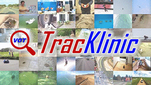
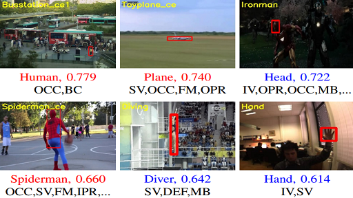
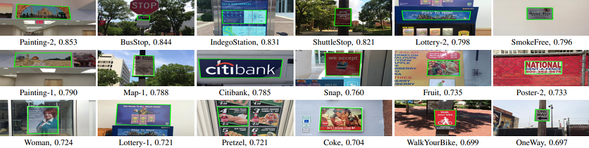
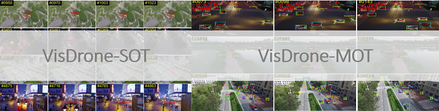
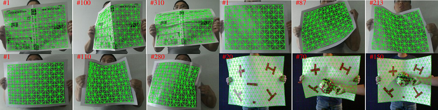

Goal
Visual object tracking has been one of the most fundamental components in computer vision with nemurous applications. In order to facilitate its further development, visual tracking benchmarks play a crucial role in providing large-scale training video sequences (for deep trackers) and also a testbed for assessing different tracking algorithms. Aligning with this purpose, we create various tracking benchmarks for different tracking tasks, inlcuding single object tracking (SOT), multi-object tracking (MOT), planar object tracking (POT), UAV-SOT, UAV-MOT and deformable surface tracking. We hope that these benchmarks can help better understand tracking tasks for improvements and offer dedicated platforms for evaluation.
Single Object Tracking

Click Me!
LaSOT LaSOT serves as a platform for large-scale training and evaluation of deep visual trackers by providing 1,550 videos with more than 3.87 millions frames with high-quality manual annotations [1, 2]. |

Click Me!
TOTB TOTB is the first benchmark for transparent object tracking. We provide 225 sequences consisting of more than 86K frames. In addition, we introduce a strong baseline achieving SOTA performance [3]. |
|

Click Me!
TracKlinic TracKlinic aims to provide a tool for researchers to diagnosize their trackers under different challenge factors and better understand their strengths and weaknesses for improvements [4]. |

Click Me!
TColor-128 TColor-128 investigates the impact of color cues in videos for improving. Specifically, it comprises 128 colorful videos that are specifically designated to evaluate color-enhanced trackers [5]. |
Multi-Object Tracking

Click Me!
GMOT-40 GMOT-40 is the first public dense dataset for Generic Multiple Object Tracking (GMOT). It contains 40 carefully annotated sequences evenly distributed among 10 object categories. Beyond the dataset, a challenging protocal, one-shot GMOT, is adopted and a series of baseline algorithms is introduced [6]. |
Planar Object Tracking
|

Click Me!
POT-210 POT-210 is used to evaluate tracking of planar objects. It contains 210 video sequences of 30 planar objects sampled in the natural environment, which is different from previous datasets captured in constrained laboratory environment [7]. |
UAV Tracking
|

Click Me!
VisDrone Two tasks on VisDrone are focused on UAV single- and multi-object tracking. More specific, VisDrone collects rich videos from various unban/suburban areas and provides training/testing sequences for SOT and MOT as well as extensive baseline evaluations for future comparison [8]. |
Deformable Surface Tracking
|

Click Me!
DeSurT DeSurt is collected using a Kinect camera to evaluate tracking performance under various deformations and lighting conditions. It consists of 11 video streams and 3,361 frames showing various deformations of different types of surfaces, including seven printed pictures with different contents, two newspapers and two cushions [9]. |
References
-
LaSOT: A High-quality Large-scale Single Object Tracking Benchmark
H. Fan*, H. Bai*, L. Lin, F. Yang, P. Chu, G. Deng, S. Yu, Harshit, M. Huang, J. Liu, Y. Xu, C. Liao, L. Yuan, and H. Ling
International Journal of Computer Vision (IJCV), 129: 439–461, 2021.
-
LaSOT: A High-quality Benchmark for Large-scale Single Object Tracking
H. Fan*, L. Lin*, F. Yang*, P. Chu*, G. Deng, S. Yu, H. Bai, Y. Xu, C. Liao, and H. Ling
IEEE Conference on Computer Vision and Pattern Recognition (CVPR), 2019.
-
Transparent Object Tracking Benchmark
H. Fan, H. Miththanthaya, Harshit, S. Rajan, X. Liu, Z. Zou, Y. Lin, and H. Ling
IEEE International Conference on Computer Vision (ICCV), 2021.
-
TracKlinic: Diagnosis of Challenge Factors in Visual Tracking
H. Fan, F. Yang, P. Chu, Y. Lin, L. Yuan, and H. Ling
IEEE Winter Conference on Applications of Computer Vision (WACV), 2021.
-
Encoding Color Information for Visual Tracking:Algorithms and Benchmark
P. Liang, E. Blasch, and H. Ling
IEEE Transactions on Image Processing (T-IP), 24(12): 5630-5644, 2015.
-
GMOT-40: A Benchmark for Generic Multiple Object Tracking
H. Bai*, W. Cheng*, P. Chu*, K. Zhang, and H. Ling
IEEE Conference on Computer Vision and Pattern Recognition (CVPR), 2021.
-
Planar Object Tracking in the Wild: A Benchmark
P. Liang, Y. Wu, H. Lu, L. Wang, C. Liao, and H. Ling
IEEE International Conference on Robotics and Automation (ICRA), 2018.
-
Vision Meets Drones: Past, Present and Future
P. Zhu, L. Wen, D. Du, X. Bian, Q. Hu, and H. Ling
arXiv preprint arXiv:2001.06303, 2020.
-
Deformable Surface Tracking by Graph Matching
T. Wang, H. Ling, C. Lang, S. Feng, and X. Hou
IEEE International Conference on Computer Vision (ICCV), 2019.
Contact
We appreciate questions/suggestions to authors of each paper or Haibin Ling at hling@cs.stonybrook.edu.